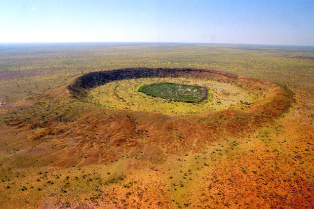
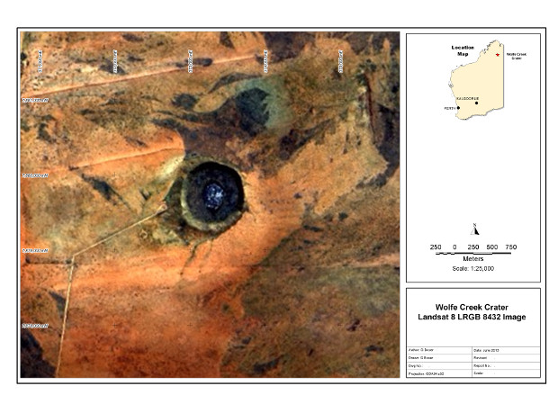
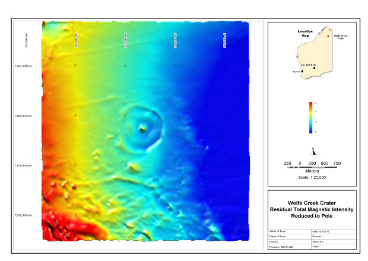
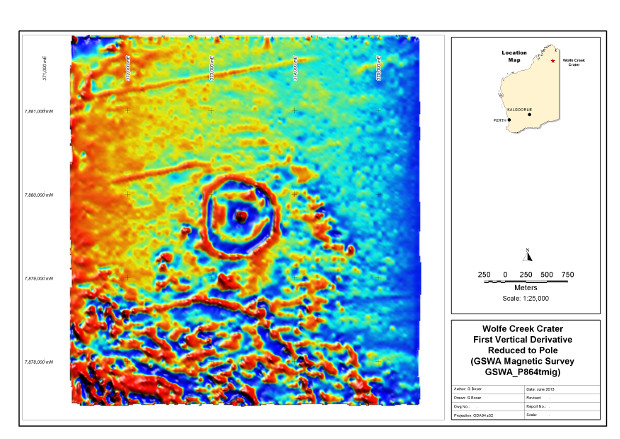

Wolfe Creek Crater
Wolfe Creek crater is located in the East Kimberley region of north east Western Australia. It is located at 127 deg 47 min 40 sec east and 19 deg 10 min 20 sec south on the Billiluna SE52-14 1:250 000 mapsheet and the Wolfe Creek 4459 1:100 000 mapsheet. The crater is covered by the Wolfe Creek Crater National Park and can be accessed via the Tanami Road, about 140 km south of Halls Creek. Note that the Tanami Road can be very rough gravel and precautions must be taken when travelling in these remote areas.
Wolfe Creek Crater (source GeekTreks.com)
Details of the crater have been summarised by Shoemaker et al (2005) and I have repeated the key points as follows. The crater is about 300,000 years old and has an average rim diameter of 880 m and a current depth of 50 m. Meteoritic material recovered from the site was Iron, group IIIAB. The crater type is Barringer.
I have compiled a variety of data from public sources including published technical papers, geoscientific data (geology and geophysics) and produced maps summarising some of this data where appropriate. I have referenced all data sources, but if I have missed any please let me know so I can correct this. I have created a series of images using public data and compiled in MapInfo as follows;

The Google Earth image show the flat sand and spinifex covered landscape with the occasional sand dune. The access road leads in from the west to a day use and camping area.
This Landsat 8 image collected in 2013 and shows the effect of recent fires in the area.
The magnetic image was created from the Geological Survey of Western Australia P864 magnetic survey with the data "reduced to the pole". The circular feature is seen clearly in this image and is even more dramatic when we look at the first vertical derivative image.
References
Shoemaker E M, Macdonald F A and Shoemaker C S. 2005. Geology of Five Small Impact Craters. Australian Journal of Earth Sciences vol. 52, p. 529-544.
O'Neill C and Heine C. 2005. Reconstructing the Wolfe Creek Meteorite Impact: Deep Structure of the Crater and Effects on Target Rocks. Australian Journal of Earth Sciences, vol. 52, p. 699-709.
Other Impact Sites of Western Australia
Glikson
Gnargoo
Goat Paddock
Ilkurka
Lennis
Neereno Hill Possible Impact Structure
Piccaninny
Skirmish
Spider
Veveers
Woodliegh